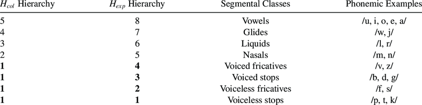
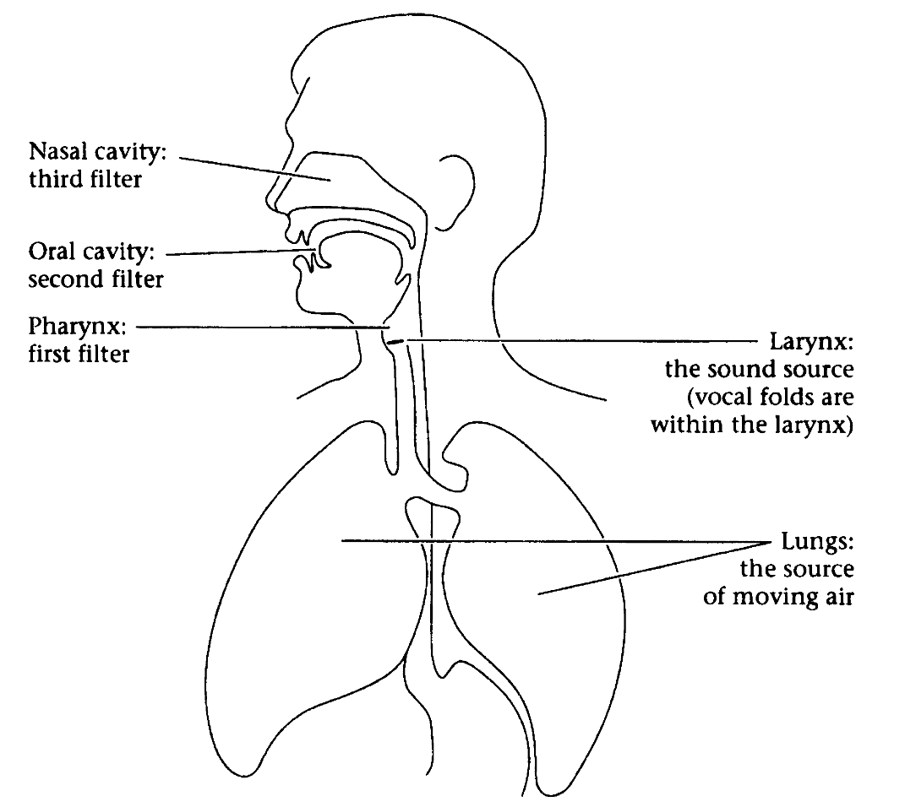
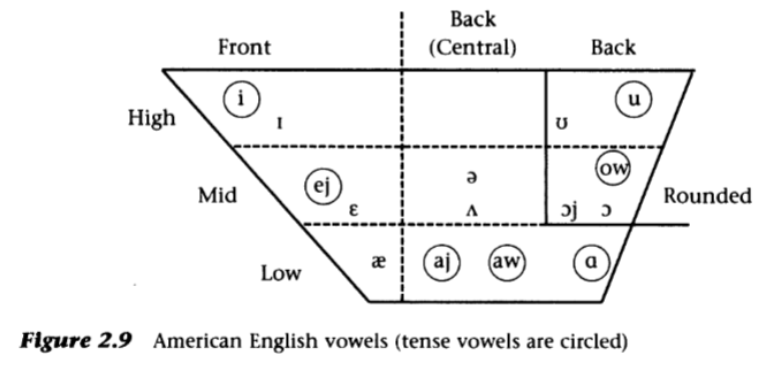
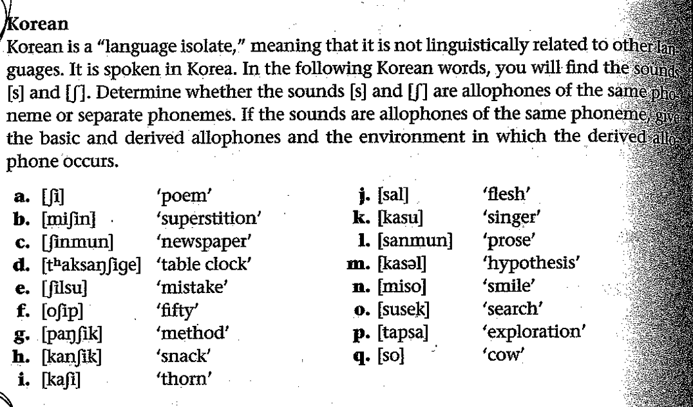

Introductions and logistics
We talked about the sonority hierarchy in relation to the nonce word judgments. Sonority is an acoustic property of speech sounds, and a sonority hierarchy ranks speech sounds with respect to their sonority (see Figure 1). The sonority hierarchy plays an important role in how syllables are built in languages. The materials for the nonce word experiment were taken from Daland et al. (2011).

The sentences are island constructions, and the name comes from Ross (1967). Islands are syntactic structures that seal off the elements inside them, and thus extraction (we called this movement) out of them results in decreased, sometimes complete, acceptability. The island data is from Sprouse, Wagers & Phillips (2011).
Why did I show you these examples? I wanted to show you some instances of grammar, what we call the set of rules combining basic expressions of language, in action. The judgments come to you very easily, as they do to other speakers of English and many other languages, but it is not easy to pinpoint why you have the judgments you have. I chose fairly complex phenomena on purpose to highlight the fact that the rules are unconscious, and the generalizations we make are not straightforward.
Daland, R., Hayes, B., White, J., Garellek, M., Davis, A., & Norrmann, I. (2011). Explaining sonority projection effects. Phonology, 28(2), 197-234.
Ross, J. R. (1967). Constraints on variables in syntax.
Sprouse, J., Wagers, M., & Phillips, C. (2012). A test of the relation between working-memory capacity and syntactic island effects. Language, 88(1), 82-123.

Speech sounds can be grouped based on which articulators are used and how they are manipulated to produce a sound. This is how consonants are grouped in the IPA. Each consonant is defined by its place of articulation and manner of articulation, along with their voicing status.
Dobrovolsky, M. (1997). Phonetics: The sounds of Language. In O'Grady, W., & Katamba, F. (Eds.), Contemporary Linguistics (pp. 15-33). New York: St. Martin's.
Three major parameters for characterizing vowels:
Additional parameters:

| Parameters | tense | lax |
|---|---|---|
| Front high unrounded | [hit] ‘heat’ | [hɪt] ‘hit’ |
| Front mid unrounded | [mejt] ‘mate’ / [hejt] ‘hate’ | [mɛt] ‘met’ |
| Back high rounded | [pul] ‘pool’ | [pʊl] ‘pull’ |
| Back mid rounded | [dowt] ‘doubt’ | [dɔt] ‘dot’ |
| Front low unrounded | — | [hæt] ‘hat’ |
| Central mid unrounded | — | [hʌt] ‘hut’ |
| Back low unrounded | [hat] ‘hot’ | — |

Material provided by Seth.
Contact: ddemiray at umass dot edu